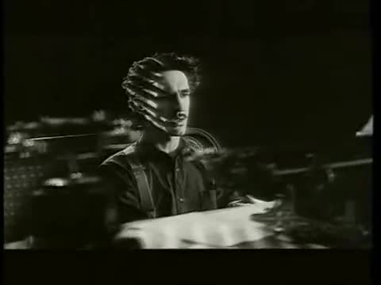

«В советский период русская музыка вступила в пору своего наивысшего расцвета.
Именно тогда было создано максимальное количество шедевров за всю историю её существования.»
Издана в 1980 г. в его же исполнении на грампластинке «Ты припомни, Россия, как всё это было», где она значится как «Песня из к/ф "Офицеры"». Более известна по первой строке «От героев былых времён…».
Без звучания песни не проходит ни одно памятное мероприятие, поскольку её пронзительные и вместе с тем сдержанно-суровые строки вызывают у каждого человека не только чувство особой гордости, но и душевной скорби.
В фильме романс прозвучал в исполнении начинающей актрисы Светланы Крючковой. В дальнейшем песню исполняли певицы Мария Пахоменко, Вероника Круглова и другие.
В 1973 году был выпущен миньон с песнями из к/ф «Иван Васильевич меняет профессию», куда вошла и эта песня.
Владимир Высоцкий - «Диалог у телевизора»
Год: 1973
Песня Владимира Высоцкого. Первое известное исполнение произошло в январе 1973 г. на концертах в Ленинграде, а осенью 1977 г. песня вышла во Франции на пластинке «Натянутый канат». В СССР песня была опубликована после смерти поэта, в 1981 г., в сборнике стихов «Нерв», а в 1990 г. была включена в пластинку «Затяжной прыжок».
Представляет собой песенную пьесу для двух персонажей, насыщенную элементами советского быта 1970-х гг., воссоздаёт атмосферу того времени. Реплики героев песни в течение десятилетий обрели характер крылатых выражений и пополнили словари современных афоризмов.
«Диалог у телевизора» рекомендован к факультативному изучению на уроках литературы в российских общеобразовательных школах.
Переведённый текст произведения про Ваню и Зину включён также в вышедший в 2007 г. в Чехии «Краткий учебник литературы», в котором среди других советских авторов значится и Высоцкий.
«Диалог у телевизора» (Ленинград, 1974)
«Диалог у телевизора» (1984) Исполняют - А.Краско и Н.Акимова
Первоначально Зацепин пригласил записать песню Софию Ротару, однако её подача показалась слишком серьёзной, и голос певицы плохо подходил высокому тембру Селезнёвой.
В 1973 году был выпущен миньон с песнями из к/ф «Иван Васильевич меняет профессию», куда вошла и эта песня.
В результате проведённого в 2015 г. журналом «Русский репортёр» социологического исследования текст песни занял 14-е место в Топ-100 самых популярных в России стихотворных строк, включающем, в числе прочего, русскую и мировую классику.
Первой исполнительницей этой песни была Эдита Пьеха, но наибольшую известность песня получила именно в исполнении Анны Герман. В 1973 г. текст и ноты песни были посланы ей в Варшаву, а в 1974 г. Герман приехала в Москву, записала «Надежду» на фирме «Мелодия» и познакомилась с авторами песни.
В результате проведённого в 2015 г. журналом «Русский репортёр» социологического исследования текст песни занял 10-е место в Топ-100 самых популярных в России стихотворных строк, включающем, в числе прочего, русскую и мировую классику.
Для фильма были написаны несколько песен, первоначально исполненных ВИА «Верные друзья». Песни быстро приобрели самостоятельную популярность: уже в год премьеры тираж грампластинок с музыкой из фильма, изданных всесоюзной фирмой грамзаписи «Мелодия», превысил 100 тыс. экземпляров. Композиции «Ты мне веришь?», «Голубая планета» и «Млечный Путь» до настоящего времени исполняются на российском радио.
Задорная песня Лисы Алисы и Кота Базилио была детским хитом и в 70-е, и 80-е… И всё же особую популярность она приобрела в 90-е. В 1990 г. на советском ТВ появилась русскоязычная версия американского «денежного» шоу «Wheel of Fortune» - «Поле чудес». А четыре года спустя после этого жителями Страны Дураков стали называть горе-вкладчиков финансовой пирамиды «МММ».
Журналом «Time Out» помещена в список «100 песен, изменивших нашу жизнь»
Песня, написанная в 1975 г. совместно композитором Александрой Пахмутовой и поэтом Николаем Добронравовым специально для х/ф «Моя любовь на третьем курсе» по пьесе «Лошадь Пржевальского» Михаила Шатрова. Песня является «визитной карточкой» певца и композитора Александра Градского. Композиция в его исполнении являлась лауреатом фестиваля «Песня-77».
Автором текстов песен, Юлием Кимом, для фильма было написано пять песен Остапа. В планах реж. фильма Марка Захарова изначально не было песни «Белеет мой парус такой одинокий»; её предложил Юлий Ким.
«Нежность» входит в цикл песен «Обнимая небо», посвящённый советским лётчикам. Была одной из любимых песен космонавта Юрия Гагарина и знаменитого лётчика-испытателя Владимира Комарова - первого человека, погибшего во время полёта в космос.
Впервые прозвучала в декабре 1965 г. в Колонном зале Дома Союзов - в концертной программе Майи Кристалинской. Стала ведущей музыкальной темой в фильме «Три тополя на Плющихе» (1967), где была исполнена Татьяной Дорониной
Впоследствии песню включили в свой репертуар многие «звёзды» советской и российской эстрады, начиная с Иосифа Кобзона, Тамары Гвердцители и Людмилы Зыкиной, и заканчивая более современными артистами.
Самая известная песня из лирической комедии об офисных отношениях в 1970-е - не столько о метеорологических наблюдениях, сколько об обретении душевного равновесия.
Журналом «Time Out» помещена в список «100 песен, изменивших нашу жизнь»
Песня Константина Никольского, записанная в 1978 г. в сотрудничестве с ВИА «Фестиваль» («Зеркало мира. Песни Константина Никольского» - Самиздат, МС - 1978), вокал - Павел Богуш.
Композиция является одной из самых известных в репертуаре Константина Никольского. Многие считают её лучшим творением музыканта. Позже песня вошла в треклист второго сольного альбома Никольского «Один взгляд назад» (1996).
Константин Никольский - «Мой друг художник и поэт» - 1991
После выхода «Сибириады» (фр. Siberiade) появилась одноимённая виниловая пластинка с музыкой из кинофильма - Siberiade (Bande originale du film d'André Kontchalovski) (1979). Туда вошли как инструментальные композиции Эдуарда Артемьева, так и исполняемые в фильме цыганские песни, а также русская народная песня «Красота ли моя».
Андрей Петров - Увертюра (из к/ф «Осенний марафон»)
Год: 1979
Инструментальная пьеса известного советского композитора Андрея Петрова, написанная для к/ф «Осенний марафон» (1979). Исполнитель: Государственный симфонический оркестр кинематографии СССР, дирижёр - Сергей Скрипка.
Имя Андрея Петрова можно встретить на афишах музыкальных театров, филармонических залов, его музыка часто звучит по радио и телевидению. Но самую большую популярность получила музыка Андрея Петрова в кино. Десятки песен, романсов, инструментальных мелодий, «сойдя с экрана», обрели свою вторую жизнь не только на концертной эстраде, на радио, телевидении, но и в нашей повседневной жизни, в быту. Музыка Петрова всегда отмечена лиризмом и изяществом, она красива и романтична, её мелодии легко запоминаются.
Одна из наиболее узнаваемых песен коллектива, была прозвана «Первым пессимистическим гимном советских хиппи».
Входит в список «100 лучших песен русского рока в XX веке» по версии «Нашего радио».
Эта песня сделала Вахтанга Кикабидзе звездой советской эстрады и оставалась «визитной карточной» замечательного грузинского артиста на протяжении всей его творческой карьеры.
Группа «Машина Времени» - «Пока горит свеча»
Год: 1980
Песня советской и российской рок-группы «Машина времени», сочинённая Андреем Макаревичем в 1978 году. Включена в звуковую дорожку х/ф Александра Стефановича «Начни сначала». Критикой признана одной из лучших композиций группы, оказавших влияние на несколько поколений слушателей.
Участник ВИА Александр Тиханович убеждён, что благодаря своей мегапопулярности песня действительно поспособствовала улучшению демографической ситуации в Советском Союзе.
Журналом «Time Out» помещена в список «100 песен, изменивших нашу жизнь»
Песня сразу стала шлягером. Она вошла в финальную часть конкурса «Песня-81» и транслировалась по Центральному телевидению СССР 1 января 1982 г. Коллектив «Ялла» получил статус Государственного ансамбля Узбекской ССР. В 1982 г. вышел их первый альбом, названный «Три колодца» - по главному хиту группы.
Группа «Воскресение» - «Один взгляд назад» («Ветерок»)
Композиция покорила слушателей всего Советского Союза. Она звучала из репродукторов, с экранов телевизоров, неслась на волнах радиостанций к сердцам людей, не равнодушных к музыке и поэзии.
А после того, как песня была представлена узбекской группой «Ялла» в альбоме «Лицо возлюбленной моей» (1983) под аккомпанемент мистического индийского ситара, она заиграла новыми гранями, обрела новое звучание, в котором слышались индийские корни, и в полной мере чувствовалось влияние великого мастера Рабиндраната Тагора.
За 44 года творческой деятельности Валентиной Толкуновой исполнено более 800 песен, преимущественно в жанре любовной, семейной и военно-патриотической лирики - многие из них отмечены различными наградами и пользовались успехом у слушателей всех возрастов.
Группа «ДДТ» - «Не стреляй!»
Год: 1982
Песня группы «ДДТ», написанная Юрием Шевчуком в 1980 г. Издавалась в альбомах «Свинья на радуге» (1982), «Компромисс» (1983) и «Я получил эту роль» (1988).
Произведение является одним из главных хитов группы и по праву считается одной из лучших антивоенных песен.
Входит в список «100 лучших песен русского рока в XX веке» по версии «Нашего радио».
Песня стала лауреатом XIII Всесоюзного телевизионного фестиваля советской песни «Песня-83». В 2009 г. решением «Роскосмоса» песне был присвоен официальный общественный статус «Гимна российской космонавтики».
Во время записи вокальную партию Семёна Фарады исполнял сам Геннадий Гладков. Композитор отказался от упоминания в титрах в качестве автора слов, и авторство песни было приписано Юлию Киму.
«Неаполитанская песенка», как было отмечено критикой, имела необыкновенный успех среди публики, а её исполнители оказались наутро после выхода фильма «на самом гребне популярности».
Входит в альбом «Иллюзорный мip» (1986), а также в официальные сборники «Живые и Мёртвые» (1988) и «Двойной альбом» (1993).
На песню был снят клип, фактически являющийся фрагментом х/ф «Тацу» (1994), в котором снялись музыканты «Крематория».
Песня была отмечена гран-при фестиваля «Песня года-87» и получила всенародное признание. Первоначально была выпущена в 1987 г. на совместном сингле Александра Барыкина и Владимира Кузьмина в рамках серии «По вашим письмам»; впоследствии вошла в одноимённый альбом «Букет» (1988).
Вступительный фолковый проигрыш был написан под впечатлением от перуанской блок-флейты, звучащей в знаменитой композиции «El Cóndor Pasa» дуэта Simon and Garfunkel.
Установлено, что текст написан Анри Волохонским в ноябре 1972 г., а автором музыки является Владимир Вавилов, советский гитарист и лютнист, предположительно, прибегший к мистификации с отсылом к композитору Эпохи Ренессанса - Франческо Канова да Милано ради того, чтобы собственная музыка малоизвестного тогда композитора, написанная, по всей видимости, в 1967-68 гг., прорвалась к слушателю.
Первым исполнителем песни стал Алексей Хвостенко, многолетний друг и соавтор Анри Волохонского. Песня стала известной в бардовской среде, её включали в свой репертуар многие исполнители.
Первоначальная версия песни в 1986 г. была записана для одноимённого альбома группы «Рок-Ателье».
В конце 1987 г. была снята телевизионная версия песни. В работе над ней приняли участие многие известные тогда рок-музыканты и исполнители.
Журналом «Time Out» помещена в список «100 песен, изменивших нашу жизнь»
Позже песня была включена в альбом «Шабаш» (1991) и несколько концертных сборников «Алисы», став своего рода «гимном» группы. Красный и чёрный цвета используются в качестве символов самой группой и людьми, увлекающимися её творчеством.
Композиция входит в список «100 лучших песен русского рока в XX веке» по версии «Нашего радио».
Первая студийная версия композиции появилась в 1986 г. на дебютном магнитоальбоме коллектива. Позже произведение было перезаписано в лучшем качестве, но на официальных пластинках этот вариант издан не был. Студийная запись 1988 года вошла бонусом к альбому «Вольница», переизданному на CD в 2006 г.
https://kalinovmost.ru/
Группа «КИНО» - «Перемен»
Год: 1987
Песня рок-группы «Кино», написанная Виктором Цоем и вошедшая в альбом-сборник «Последний герой», изданный во Франции в 1989 г.
Также известна под «народными» названиями: «Хочу перемен!» (обозначена в выходных данных альбома «Последний герой»), «Мы ждём перемен», «Перемен требуют наши сердца».
Впервые песня прозвучала в 1986 г. на IV фестивале Ленинградского рок-клуба. Однако всенародную известность получила после премьеры главного рок-фильма 80-х – картины Сергея Соловьёва «АССА».
Входит в список «100 лучших песен русского рока в XX веке» по версии «Нашего радио».
Журналом «Time Out» помещена в список «100 песен, изменивших нашу жизнь»
Группа «КИНО» - «Следи за собой»
Год: 1987
Песня рок-группы «Кино», написанная Виктором Цоем вместе с другом Олегом Котельниковым в 1986 г., и вошедшая в «Чёрный альбом» (1991).
Не входившая на тот момент ни в один альбом, песня была признана многими музыкальными чартами лучшей по итогам года и впоследствии стала одной из самых знаковых и известных песен в репертуаре «Кино».
Группа «Наутилус Помпилиус» - «Я хочу быть с тобой»
Впервые была представлена публике 21 июня 1987 г. на концерте в Таллине. Композиция является одной из визитных карточек коллектива.
Входит в список «100 лучших песен русского рока в XX веке» по версии «Нашего радио».
http://www.nautilus.ru/
Михаил Боярский, Андрей Миронов и Лариса Долина - «Была не была!»
По словам Михаила Боярского, во Франции эту песню женихи поют своим невестам. Рефрен «Ланфрен-ланфра» не имеет перевода, однако действительно встречается, например, в старофранцузской песне «La belle» («Красавица»), изданной впервые в Париже в 1600 г.
Песня, написанная в 1975 г. совместно композитором Александрой Пахмутовой и поэтом Николаем Добронравовым специально для х/ф «Моя любовь на третьем курсе» по пьесе «Лошадь Пржевальского» Михаила Шатрова. Песня является «визитной карточкой» певца и композитора Александра Градского. Композиция в его исполнении являлась лауреатом фестиваля «Песня-77».
Песня исполнена на авторском вечере Александры Пахмутовой (1988).
В 1990 г. фирма «Мелодия» за пластинки «Синий туман» (1988) и «Колдовское озеро» (1990), вышедшие тиражами по 7 миллионов экземпляров, вручила Добрынину «Золотой диск».
Песня группы «Кино» из одноимённого альбома. Автор текста и музыки – Виктор Цой.
Звучит в финале фильма «Игла» реж. Рашида Нугманова. После выхода фильма на экраны стала одним из самых известных хитов «Кино». Входит в список «100 лучших песен русского рока в XX веке» по версии «Нашего радио». В исследовании, проведённом журналом «Русский репортёр», песня заняла второе место среди песен на русском языке.
«КИНО» - «Группа крови» (Remake)
Группа «КИНО» - «Закрой за мной дверь, я ухожу»
Год: 1988
Песня группы «Кино» из альбома «Группа Крови» (1988). Автор текста и музыки – Виктор Цой.
Песня группы «Кино», вошедшая в «Чёрный альбом» (1991). Автор текста и музыки – Виктор Цой.
На акустических концертах исполнялась ещё в 80-х годах. Широко известно выступление Виктора Цоя в ДК «Железнодорожников», состоявшееся в 1988 г., где среди прочего прозвучала и эта композиция.
«КИНО» - «Когда твоя девушка больна» («Легенда», 2018)
Группа «КИНО» - «Спокойная ночь»
Год: 1988
Рок-баллада группы «Кино». Большая часть музыки и текст песни написаны Виктором Цоем, а гитарное соло было придумано Юрием Каспаряном.
Композиция была написана в 1986 г., а впервые выпущена в альбоме «Группа крови» (1988).
Входит в список «100 лучших песен русского рока в XX веке» по версии «Нашего радио».
Изначально песню исполнял сам Олег Кваша. В 1989 г. фирма «Мелодия» выпустила пластинку, на которой эстрадные звёзды пели песни Олега Кваши. Именно Михаилу Боярскому посчастливилось спеть «Зеленоглазое такси» - при том готовая версия была записана ещё в ноябре 1987 г.
Песня занимает особое место не только в репертуаре Боярского, но и в музыкальной коллекции всей страны.
В 1989 г. был снят успешный клип, а песня стала хитом и «визитной карточкой» группы. Вошла в альбом «Я буду помнить» (вместе с Владимиром Пресняковым-мл.) (1991).
http://a-ivanov.ru/
Александр Иванов, Владимир Пресняков-мл. и группа «Рондо» - «Я буду помнить»
«Я буду помнить» стала олицетворением дружбы и сотрудничества двух музыкантов, был выпущен клип, а в 1991 г. песня озаглавила новый альбом группы «Рондо».
Песня сыграла немаловажную роль в становлении успеха группы. В 1990 г. композицию взяли в программу «Песня года», а государственная фирма «Мелодия» выпустила одноимённый дебютный альбом коллектива - «Страна Лимония».
Песня группы «Кино» из одноимённого альбома, вышедшего в 1989 г. Автор текста и музыки – Виктор Цой.
Написана в 1988 г. в Алма-Ате, во время съёмок фильма «Игла». Первоначальный вариант её исполнения можно услышать в самом начале этой картины.
Одна из самых известных и самых популярных песен группы. Входит в список «100 лучших песен русского рока в XX веке» по версии «Нашего радио».
«Звезда по имени Солнце» - Video Album - 1989
Группа «КИНО» - «Место для шага вперёд»
Год: 1989
Песня группы «Кино» из альбома «Звезда по имени Солнце» (1989). Автор текста и музыки – Виктор Цой.
Также известна под названием «Белые дни». Группа редко исполняла эту песню на концертах, хотя всем её участникам была по душе.
Группа «КИНО» - «Невесёлая песня»
Год: 1989
Песня группы «Кино» из альбома «Звезда по имени Солнце» (1989). Автор текста и музыки – Виктор Цой.
Группа «КИНО» - «Пачка сигарет»
Год: 1989
Песня группы «Кино» из альбома «Звезда по имени Солнце» (1989). Автор текста и музыки – Виктор Цой.
Песня группы «Кино» из альбома «Звезда по имени Солнце» (1989). Автор текста и музыки – Виктор Цой.
Последние два года все выступления «Кино» начинались именно с этой композиции.
«Песня без слов» - Live - 2021
Группа «КИНО» - «Печаль»
Год: 1989
Песня группы «Кино» из альбома «Звезда по имени Солнце» (1989). Автор текста и музыки – Виктор Цой.
Группа «КИНО» - «Сказка»
Год: 1989
Песня группы «Кино» из альбома «Звезда по имени Солнце» (1989). Автор текста и музыки – Виктор Цой.
Композиция никогда не исполнялась на концертах коллектива. Также не сохранился акустический вариант этого произведения (во всяком случае, на текущий момент он не был опубликован ни официально, ни в виде бутлега).
Группа «КИНО» - «Стук»
Год: 1989
Песня группы «Кино» из альбома «Звезда по имени Солнце» (1989). Автор текста и музыки – Виктор Цой.
Композиция стала одним из главных номеров концертной программы коллектива и исполнялась на каждом выступлении, вплоть до последнего.
Песня произвела фурор - группа мгновенно приобрела огромную популярность, её песни начали звучать повсюду, а «Белые розы» стали всенародно любимым хитом и визитной карточкой юного солиста с непростой судьбой - Юры Шатунова.
Журналом «Time Out» помещена в список «100 песен, изменивших нашу жизнь»
Фильм получил несколько международных наград. По опросу кинокритиков и журналистов был признан лучшим фильмом года, а роль Андрея Жигалова - лучшей мужской ролью.
Группа «ДДТ» - «В последнюю осень»
Год: 1990
Песня группы «ДДТ», одно из главных произведений «осеннего» цикла Юрия Шевчука - лидера группы, автора музыки и слов. Написана в 1990 г. и впервые исполнена на концерте памяти Виктора Цоя в октябре того же года.
Песня была включена в альбомы «Актриса Весна» (1992) «Чёрный пёс Петербург» (1993).
Входит в список «100 лучших песен русского рока в XX веке» по версии «Нашего радио».
https://ddt.ru/
Группа «ДДТ» - «У тебя есть сын»
Год: 1990
Песня группы «ДДТ» из студийного альбома «Актриса Весна» (1992). Автор текста и музыки - Юрий Шевчук.
В 1990 г. на эту композицию был снят клип. Не вошла в первое издание альбома «Актриса Весна» на виниловых пластинках. Этот трек был выпущен только на компакт-дисках (1993).
Запись для будущего альбома летом 1990 г. осуществлялась на портостудии «Yamaha» в посёлке Плиеньциемс под Юрмалой. В блокноте Виктора есть набросок трек-листа, в котором песня имеет название «Жду ответа». После гибели Цоя запись была доработана и вышла на «Чёрном альбоме» в январе 1991 г.
Группа «КИНО» - «Кукушка»
Год: 1990
Песня группы «Кино», центральная композиция «Чёрного альбома» (1991). Автор текста и музыки – Виктор Цой.
Была написана Виктором Цоем незадолго до своей гибели, чистовая версия сделана уже после смерти автора.
Официальным клипом «Кукушки» принято считать нарезку видеоряда из документального фильма «Человек в чёрном»
Громкому успеху трека способствовал запоминающийся видеоклип, снятый Фёдором Бондарчуком в очень дорогих декорациях на «Мосфильме».
https://moralcodex.ru/
Группа «ЧАЙФ» - «Поплачь о нём»
юбилейный концерт, 2010
Год: 1990
Песня группы «Чайф», представленная в альбомах «Не беда» (1990) и «Давай вернёмся» (1992). Автор текста и музыки – Владимир Шахрин, бессменный лидер группы.
Композиция также вошла в альбом группы «Бригада С» «Всё это рок-н-ролл» (1992), где Владимир Шахрин поёт её дуэтом с Гариком Сукачёвым. Именно этот вариант исполнения произведения стал наиболее известным.
«ЧАЙФ» и Гарик Сукачёв – «Поплачь о нём» - Live - 2015
Альбом был выпущен на грампластинках в декабре 1991 г., уже после смерти автора.
Юрий Антонов - «Если»
Год: 1990
Песня из альбома «Лунная дорожка» (1990). Музыка и исполнение - Юрий Антонов, слова - Олег Виленкин.
Юрий Лоза - «Плот»
Год: 1990
Самая известная песня советского автора-исполнителя Юрия Лозы.
Песня была написана Юрием Лозой в 1982 г. (по неподтверждённым данным, была куплена у тобольских музыкантов). Известность получила только в 1988 г., когда была включена в альбом «Что сказано, то сказано». Приобрела огромный успех, стала радиохитом и в настоящее время является «визитной карточкой» исполнителя.
В результате проведённого в 2015 г. журналом «Русский репортёр» социологического исследования текст песни занял 44-е место в Топ-100 самых популярных в России стихотворных строк, включающем, в числе прочего, русскую и мировую классику.
Посвящена памяти Виктора Цоя. Впервые была исполнена на концерте 24 сентября 1990 г.
Входит в список «100 лучших песен русского рока в XX веке» по версии «Нашего радио».
http://www.alisa.net/
Группа «ДДТ» - «Родина»
Год: 1991
(Киев, 1991) Песня группы «ДДТ». Автор текста и музыки - Юрий Шевчук. Входит в студийный альбом «Актриса Весна» (1992). Концертная версия композиции издавалась в сборниках «Черный пёс Петербург» (1994) и «Иначе. Live in Essen» (2013).
«Родина» стала одной из визитных карточек коллектива и исполняется практически на каждом концерте ближе к окончанию. Изначально в песне было лишь два куплета. Именно в таком виде она исполнялась на концертах в начале 90-х гг. Окончательный вариант текста сформировался к 1992 г.
Входит в список «100 лучших песен русского рока в XX веке» по версии «Нашего радио».
Впервые композиция была представлена в виде сингла (клипа) в 1991 г., а позже вошла в одноимённый альбом (1997) в другой версии исполнения. Сегодня именно она считается канонической, поскольку единственная из двух была издана официально.
«Рождённый в СССР» (1997)
https://ddt.ru/
Группа «ДДТ» - «Что такое осень»
Год: 1991
Песня группы «ДДТ», написанная Юрием Шевчуком в конце сентября 1991 г. В канонической версии входит в студийный альбом «Актриса Весна» (1992).
На песню был снят один из известнейших клипов «ДДТ». В кадре появляются три культовых отечественных музыканта - Вячеслав Бутусов, Константин Кинчев и Юрий Шевчук.
Один из первых шлягеров группы, появившийся в альбоме «Вокруг света» (1990). После выхода пластинки оба участника дуэта «Кар-Мэн» моментально стали настоящими звёздами.
Журналом «Time Out» помещена в список «100 песен, изменивших нашу жизнь»
Вошла в дебютный альбом группы, «Поговорим о сексе» (1992), который переиздавался три раза с добавлением новых песен, разошёлся тиражом более миллиона экземпляров и имел большой успех у широкой аудитории.
Издавалась в альбомах «Лучшие песни «Машины времени» 1979-1985» (одна из первых концертных версий) и «Медленная хорошая музыка» (1991) (студийная версия).
Входит в список «100 лучших песен русского рока в XX веке» по версии «Нашего радио».
http://mashina.ru/
Группа «Наутилус Помпилиус» - «На берегу безымянной реки»
На песню снят официальный видеоклип (1991). В клипе обыгрывается популярный в начале 90-х латинский танец «Ламбада», изменённую версию которого на экране исполняют молодые танцоры.
http://www.nautilus.ru/
Группа «Ноль» - «Человек и Кошка»
Год: 1991
Песня группы «Ноль» из альбома «Песня о безответной любви к Родине» (1991). Автор текста и музыки – Фёдор Чистяков.
Композиция является визитной карточкой как группы, так и исполнителя, на неё было снято три официальных клипа. Является рекордсменом по количеству кавер-версий. Песню исполняли как музыканты, так и киноактёры.
https://nolhistory.ru/
Группа «НОМ» - «Насекомые»
Год: 1991
Песня группы «НОМ» из альбома «Брутто» (1991). Авторы - Андрей Кагадеев и Сергей Бутузов.
Н.О.М. (НОМ, Неформальное объединение молодёжи) — советская и российская музыкальная группа. Стиль музыки можно условно назвать «ироничный рок». Основным творческим методом при образовании коллектива была «драматизация идиотических проявлений действительности и идиотизация драматических». Кроме того, группа является многоформатной, выпускает фильмы, книги, плакаты и т. п.
Впервые была опубликована в магнитоальбоме «Колхозный панк» (1989). Однако известность получила обновлённая версия композиции. Этот вариант группа записала в 1991 г.
Группа «Технология» - «Нажми на кнопку»
Год: 1991
Песня из дебютного альбома «Всё, что ты хочешь» (1991) группы «Технология». Музыка и текст - Роман Рябцев, вокал - Роман Рябцев и Владимир Нечитайло.
Группа «Технология» - «Странные танцы»
Год: 1991
Песня из дебютного альбома «Всё, что ты хочешь» (1991) группы «Технология». Музыка и текст - Роман Рябцев, вокал - Роман Рябцев.
Стала одной из «визитных карточек» певицы и финальной заставкой одноимённой телепрограммы. В результате проведённого в 2015 г. журналом «Русский репортёр» социологического исследования текст песни занял 61-е место в Топ-100 самых популярных в России стихотворных строк, включающем, в числе прочего, русскую и мировую классику.
В 1992 г. на песню был снят видеоклип, однако его видеоряд не устроил автора композиции и поэтому широкой аудитории этот ролик неизвестен. В дальнейшем песня вошла в репертуар группы «Неприкасаемые» и регулярно исполнялась на живых выступлениях.
Входит в список «100 лучших песен русского рока в XX веке» по версии «Нашего радио».
https://garik.su/
Группа «Бригада С» и другие - «Всё это рок-н-ролл»
Получила наибольшую известность в коллективном исполнении группы «Бригада С» и нынешних легенд русского рока, включая самого автора, и стала заглавной песней в одноимённом альбоме (1992) этой группы. Композиция приобрела статус «гимна русского рока», а снятый на неё клип стал культовым.
Входит в список «100 лучших песен русского рока в XX веке» по версии «Нашего радио».
Также известна под названием «Ямщик». В 1992 г. на песню был снят видеоклип. В дальнейшем песня вошла в репертуар группы «Неприкасаемые».
https://garik.su/
Группа «ДДТ» - «Дождь»
Год: 1992
Самый ранний хит группы «ДДТ»». Автор текста и музыки - Юрий Шевчук.
Композиция была написана в 1981 г., однако, популярность приобрела только в начале 90-х гг. Песня в разных аранжировках входит в альбомы «Свинья на радуге» (1982) и «Актриса весна» (1992). Канонической версией песни считается опубликованная в 1992 г.
«Дождь» (1986)
https://ddt.ru/
Группа «ДДТ» - «Ты не один»
Год: 1992
Один из хитов группы «ДДТ» начала 90-х гг. Автор текста и музыки - Юрий Шевчук.
Песня вошла в концертный альбом «Чёрный пёс Петербург» (1993). Студийная версия композиции официально не издавалась.
Входит в список «100 лучших песен русского рока в XX веке» по версии «Нашего радио».
https://ddt.ru/
Группа «ДДТ» - «Чёрный пёс Петербург»
Год: 1992
Песня группы «ДДТ», давшая название одноимённому концертному альбому, изданному в 1994 г. Автор текста и музыки - Юрий Шевчук.
В 1992 г. был снят клип. В качестве звуковой дорожки для этого ролика использовалась студийная версия композиции, которая так и не вошла ни в один официальный альбом.
https://ddt.ru/

Группа «Наутилус Помпилиус» - «Прогулки по воде»
Композиция является одним из известнейших произведений в репертуаре группы. Сюжет песни представляет собой изменённый библейский сюжет, который Вячеслав Бутусов назвал «псевдопритчей».
На песню были сняты два клипа - обычный и анимационный.
Первая версия клипа (1992)
http://www.nautilus.ru/
Группа «Ноль» - «Иду, курю»
Год: 1992
Песня группы «Ноль» из альбома «Песня о безответной любви к Родине» (1991). Автор текста и музыки – Фёдор Чистяков.
Песня группы «Ноль» из альбома «Песня о безответной любви к Родине» (1991). Автор текста и музыки – Фёдор Чистяков.
Клип на песню был снят в 1992 г. Согласно воспоминаниям участников событий, на съёмочной площадке царила ужасная атмосфера. В кадре нет ни одного трезвого человека, а сам процесс больше напоминал пляски в преисподней. Кроме того, музыканты-артисты раскуривали «трубку мира», которая была заправлена вовсе не табаком.
Входит в список «100 лучших песен русского рока в XX веке» по версии «Нашего радио».
https://nolhistory.ru/
Группа «НОМ» - «Город»
Год: 1992
Песня группы «НОМ» из альбома «Супердиск» (1993). Автор - Дмитрий Тихонов (псевд. Александр Ливер).
Н.О.М. (НОМ, Неформальное объединение молодёжи) — советская и российская музыкальная группа. Стиль музыки можно условно назвать «ироничный рок». Основным творческим методом при образовании коллектива была «драматизация идиотических проявлений действительности и идиотизация драматических». Кроме того, группа является многоформатной, выпускает фильмы, книги, плакаты и т. п.
Н.О.М. (НОМ, Неформальное объединение молодёжи) — советская и российская музыкальная группа. Стиль музыки можно условно назвать «ироничный рок». Основным творческим методом при образовании коллектива была «драматизация идиотических проявлений действительности и идиотизация драматических». Кроме того, группа является многоформатной, выпускает фильмы, книги, плакаты и т. п.
Песня поэта и композитора Виктора Резникова, написанная в 1991 г. и исполнявшаяся автором. Виктор Резников посвятил эту песню своей жене Людмиле. После гибели автора песня обрела популярность в исполнении Михаила Боярского.
В 1993 г. был выпущен видеоролик, снятый в ресторане «КЭТ» - в нём артист исполняет песню в кругу семьи
Самыми любимыми своими песнями Боярский считает те, что были написаны Максимом Дунаевским и Виктором Резниковым.
Записана и выпущена на студийном альбоме «Внештатный командиръ Зѣмли. Блюзы Эль-Мокамбо» (1993). Позже перезаписана Маргулисом с участием сессионных музыкантов и издана на сольном альбоме «Евгений Маргулис» (2001).
Критикой отнесена к числу лучших композиций «Машины времени», в которой отражены основные мотивы западной рок-культуры и базовые компоненты русского рока.
http://mashina.ru/
Группа «СерьГа» - «А что нам надо?»
Год: 1993
Песня группы «СерьГа» из альбома «Собачий вальс» (1994). Автор текста и музыки - Сергей Галанин.
Одна из самых известных песен группы «Чайф», входящая в альбом «Дети гор» (1993). Автор текста и музыки – Владимир Шахрин.
На песню был снят не менее известный клип «Чайф». Как и «Ой-йо», песня «Не спеши» стала народной.
Входит в список «100 лучших песен русского рока в XX веке» по версии «Нашего радио».
http://chaif.ru/
Анатолий Крупнов и группа «Чёрный Обелиск» - «Я остаюсь»
«Я остаюсь» была написана в 1992 г. Её первоначальная версия была намного тяжелее и воспринималась трагичнее, чем поздняя разудалая. В такой же аранжировке Крупнов пел её на концертах «Неприкасаемых» и выпустил в сборнике «Чужие песни и несколько своих» (1997).
Композиция была написана в 1992 г., озаглавила четвёртый полноформатный альбом Преснякова, выпущенный в 1994 г., и концертную программу следующего 1995-го года, которая была признана лучшим шоу года.
Произведение автор посвятил своей супруге. Один из безусловных хитов музыканта, частый гость радиоэфира и обязательный номер больших концертов.
Входит в список «100 лучших песен русского рока в XX веке» по версии «Нашего радио».
Композиция была написана в апреле 1992 г. и является одним из известнейших хитов группы, а также одной из её визитных карточек.
Входит в список «100 лучших песен русского рока в XX веке» по версии «Нашего радио».
https://agata.rip/
Группа «Браво» - «Дорога в облака»
Год: 1994
Песня группы «Браво» из одноимённого студийного альбома (1994). Авторы текста - Валерий Сюткин и Сергей Патрушев, композитор - Евгений Хавтан, вокал - Валерий Сюткин.
Песня группы «ДДТ» из альбома «Это всё…» (1995). Автор текста и музыки - Юрий Шевчук.
Композиция является одним из известнейших хитов коллектива, при этом редко исполняется на концертах и более известна в студийном варианте.
https://ddt.ru/
Группа «НОМ» - «7%»
Год: 1994
Песня группы «НОМ» из альбома «Сенька Мосг/хаз» (1994).
Н.О.М. (НОМ, Неформальное объединение молодёжи) — советская и российская музыкальная группа. Стиль музыки можно условно назвать «ироничный рок». Основным творческим методом при образовании коллектива была «драматизация идиотических проявлений действительности и идиотизация драматических». Кроме того, группа является многоформатной, выпускает фильмы, книги, плакаты и т. п.
Вошла в шестой студийный альбом «Немного огня» (1994).
www.piknik.info
Группа «ЧАЙФ» - «Никто не услышит (Ой-йо)»
Год: 1994
Песня группы «Чайф» из альбома «Давай вернёмся» (1992). Автор текста и музыки – Владимир Шахрин.
Композиция была записана в 1990 г. и официально издана на виниловых пластинках в 1991 г, однако, видео к ней появилось лишь в 1994-ом.
Песня занимает почётное место в золотом фонде группы и является одной из её визитных карточек.
Входит в список «100 лучших песен русского рока в XX веке» по версии «Нашего радио».
Журналом «Time Out» помещена в список «100 песен, изменивших нашу жизнь»
«Никто не услышит (Ой-йо)» - Live - 2000
http://chaif.ru/
Группа «Агата Кристи» - «Опиум для никого»
реж. Анатолий Берсенев
Год: 1995
Одна из самых известных композиций группы «Агата Кристи», написанная Глебом Самойловым и включённая, пожалуй, в самый лучший альбом коллектива - «Опиум» (1995).
Песня Виктора Цоя, исполненная лидером группы «АлисА»Константином Кинчевым на концерте в телестудии телеканала РТР. Само выступление транслировалось в прямом эфире.
В этом же году вышел концертный альбом «На Шаболовке», записанный во время выступления.
Полная версия концерта
http://www.alisa.net/
Группа «ДДТ» - «Ветер»
Год: 1995
Песня группы «ДДТ» из альбома «Это всё…» (1995). Автор текста и музыки - Юрий Шевчук.
Песня стала популярна во многом за счёт клипа, который часто показывали по различным телеканалам.
https://ddt.ru/
Группа «ДДТ» - «Мёртвый город. Рождество»
Год: 1995
Песня группы «ДДТ» из альбома «Рождённый в СССР» (1997). Автор текста и музыки - Юрий Шевчук.
Песня написана после возвращения Юрия Шевчука из Чечни, куда он ездил зимой 1995 г. для того, чтобы морально поддержать российских солдат и описывает обстановку, царившую в Грозном в рождественские дни того года. Тогда же была написана другая известная песня «ДДТ» - «Пацаны».
https://ddt.ru/
Группа «ДДТ» - «Это всё»
Год: 1995
Песня группы «ДДТ» из одноимённого альбома (1995). Автор текста и музыки - Юрий Шевчук.
Композиция является одной из известнейших в репертуаре коллектива. Как говорил Юрий Шевчук, в этом произведении говорится о любви - единственном, что имеет значение в нашей жизни.
В 2007 г. Юрий Шевчук исполнил песню «Это всё» в сопровождении Большого Симфонического оркестра им. П.И.Чайковского п/у В.Федосеева
Произведение ни в один студийный альбом не вошло, издавалось лишь в качестве бонуса сначала к альбому «Дарза» (1992), а потом к «Поясу Ульчи» (1994).
https://kalinovmost.ru/
Группа «Монгол Шуудан» - «Москва»
Год: 1995
Песня группы «Монгол Шуудан» на стихи выдающегося русского поэта Сергея Есенина, музыку к которой написал её лидер - Валерий Скородед.
«Москва» впервые была опубликована в альбоме «Чересчур» (1995), однако Валерий Скородед написал её гораздо раньше. Композиция стала хитом и «визитной карточкой» коллектива.
Входит в список «100 лучших песен русского рока в XX веке» по версии «Нашего радио».
http://www.mongolshuudan.ru/
Группа «Чиж & Co» - «О Любви»
Год: 1995
Песня группы «Чиж & Co» из одноимённого студийного альбома (1995) в исполнении её лидера Сергея Чигракова. Автор песни - Олег Тарасов.
Главный хит последних лет жизни Анатолия Крупнова на стихи русской поэтессы Зинаиды Гиппиус.
Композиция, оказавшаяся пророческой, открывает посмертный альбом Анатолия Крупнова «Postальбом», изданный в 2000 г., спустя три года после смерти автора.
Композиция вошла в одноимённый альбом (1996), несколько месяцев занимала верхние строчки хит-парадов популярных радиостанций.
https://avarum.ru/
Анатолий Крупнов и группа «Крупский сотоварищи» - «Дорожная»
Год: 1997
Песня Анатолия Крупнова, вошедшая в альбом «Чужие песни и несколько своих» (1997) группы «Крупский сотоварищи» (проект Анатолия Крупнова после «Чёрного обелиска»).
Клип на песню был снят после смерти Крупнова, а его участниками стали друзья музыканта. В кадре появляются Константин Кинчев, Сергей Галанин, Гарик Сукачёв, Павел Кузин, Сергей Воронов и другие.
https://krupnov.net/
Гарик Сукачёв и группа «Неприкасаемые» - «Напои меня водой»
В 2006 г. журнал «Play» включил альбом в свой список «Лучшая музыка в СССР». Композиция является одним из известнейших хитов исполнителя.
Входит в список «100 лучших песен русского рока в XX веке» по версии «Нашего радио».
Композиция является одной из «визитных карточек» коллектива. Клип «Владивосток 2000» стал первым музыкальным видео, показанным в эфире российского MTV.
Песня входит в список «100 лучших песен русского рока в XX веке» по версии «Нашего радио».
Песня группы «Калинов Мост» из альбома «Оружие» (1998). Музыка композиции написана Дмитрием Ревякиным в соавторстве с гитаристом коллектива - Василием Смоленцевым.
На сегодняшний день это произведение является главным и самым известным хитом группы.
Премьера первых двух фильмов сериала состоялась весной 2000-го. «Бандитский Петербург» стал одним из самых успешных российских сериалов нулевых, а песни из него разлетелись на цитаты. Многие считают «Город, которого нет» неофициальным гимном Санкт-Петербурга.
Музыкальное произведение композитора Арама Хачатуряна, написанное для последнего действия балета «Гаянэ» (1942).
Это блестящее сочинение называют самым запоминающимся и самым безумным музыкальным произведением XX века. В короткий срок, облетев весь мир, оно сразу завоевало огромную популярность, которая на протяжении десятилетий успешно сохраняется.
Арам Хачатурян - Вальс (музыка к драме «Маскарад»)
Год: 1943
Партия из оркестровой сюиты, составленной композитором Арамом Хачатуряном на основе сочинённой им музыки к постановке драмы М.Ю. Лермонтова «Маскарад» (1941).
«Вальс» и «Танец с саблями» Арама Хачатуряна неизменно входят в перечни наиболее исполняемых произведений не только симфонической, но и эстрадной музыки.
Спустя девять лет Свиридов решил сделать редакцию партитуры. Так в 1974 г. появилось самостоятельное произведение, которое уже получило название «Музыкальные иллюстрации к повести А.С. Пушкина «Метель».
Невероятно красивые мелодии, едва уловимый легкий перезвон бубенцов, романсовые интонации, бытовавшие в начале XIX века, нежнейшие напевы, истинно русская музыка - всё это делает сюиту «Метель» одной из жемчужин классической музыки.
Спустя девять лет Свиридов решил сделать редакцию партитуры. Так в 1974 г. появилось самостоятельное произведение, которое уже получило название «Музыкальные иллюстрации к повести А.С. Пушкина «Метель».
Невероятно красивые мелодии, едва уловимый легкий перезвон бубенцов, романсовые интонации, бытовавшие в начале XIX века, нежнейшие напевы, истинно русская музыка - всё это делает сюиту «Метель» одной из жемчужин классической музыки.
Спустя девять лет Свиридов решил сделать редакцию партитуры. Так в 1974 г. появилось самостоятельное произведение, которое уже получило название «Музыкальные иллюстрации к повести А.С. Пушкина «Метель».
Невероятно красивые мелодии, едва уловимый легкий перезвон бубенцов, романсовые интонации, бытовавшие в начале XIX века, нежнейшие напевы, истинно русская музыка - всё это делает сюиту «Метель» одной из жемчужин классической музыки.
6-я часть из одноимённой сюиты композитора Георгия Свиридова, изданной впервые в 1965 г. (первая редакция) и в 1977 г. (вторая редакция).
Сюита создана на основе музыки к одноимённому к/ф «Время, вперёд!» (1965), посвящённому строительству первой очереди Магнитогорского металлургического комбината.
Композиция, получившая поистине всенародное признание и ставшая музыкальным символом Советского государства отождествляет всё лучшее, что было в СССР - научно-технический прогресс, авангардное искусство и передовое просвещение.
Большой симфонический оркестр Гостелерадио СССР п/у В.Федосеева (1987)
Владимир Дашкевич, советский и российский композитор, теоретик музыки, утверждал, что использовал тему «Абделазар» (1695) Генри Пёрселла как модель для Увертюры.
Николай Корндорф - Сюита из т/ф «Морской волк» (1990)
Новый период развития советской музыкальной культуры
В двустадийном процессе эволюции отечественной музыки более сложен второй этап, вторая половина века. Начиная с 1970-х годов, отечественная культура вступает в новый период развития. Расширяются международные культурные связи, в нашей стране гастролируют выдающиеся зарубежные исполнители, дирижеры, театры, оркестры. Отечественное исполнительское искусство завоевывает международный авторитет.
1980-егоды
Расцвет русского рока
Расцвет русского рока пришёлся на 1980-е годы, а с началом перестройки и гласности у музыкантов появилась возможность выступать на концертах не опасаясь преследования за частное предпринимательство или тунеядство, как это было раньше. В СССР были созданы рок-клубы, сформировались известные, и частично по сей день действующие рок-группы, прошли первые рок-фестивали (Тбилиси-80, Литуаника 85-89, Подольск-87). На русский рок 1980-х большое влияние оказал жанр «новой волны». Также появились и первые группы в жанре хэви-метал. Наиболее успешные группы 1980-х - Кино, Алиса, Ария, Наутилус Помпилиус.
1980
Текст для данного раздела находится в стадии подготовки.
1981
Текст для данного раздела находится в стадии подготовки.
1982
Текст для данного раздела находится в стадии подготовки.
1983
Текст для данного раздела находится в стадии подготовки.
1990-егоды
Раздел в разработке
Текст для данного раздела находится в стадии подготовки.
1990
Текст для данного раздела находится в стадии подготовки.
1991
Текст для данного раздела находится в стадии подготовки.
1992
Текст для данного раздела находится в стадии подготовки.
1993
Текст для данного раздела находится в стадии подготовки.
2000-егоды
Раздел в разработке
Текст для данного раздела находится в стадии подготовки.
Радиостанции
Скопировать ссылку на .m3u8 плейлист радиостанций, играющих музыку времён Советского Союза